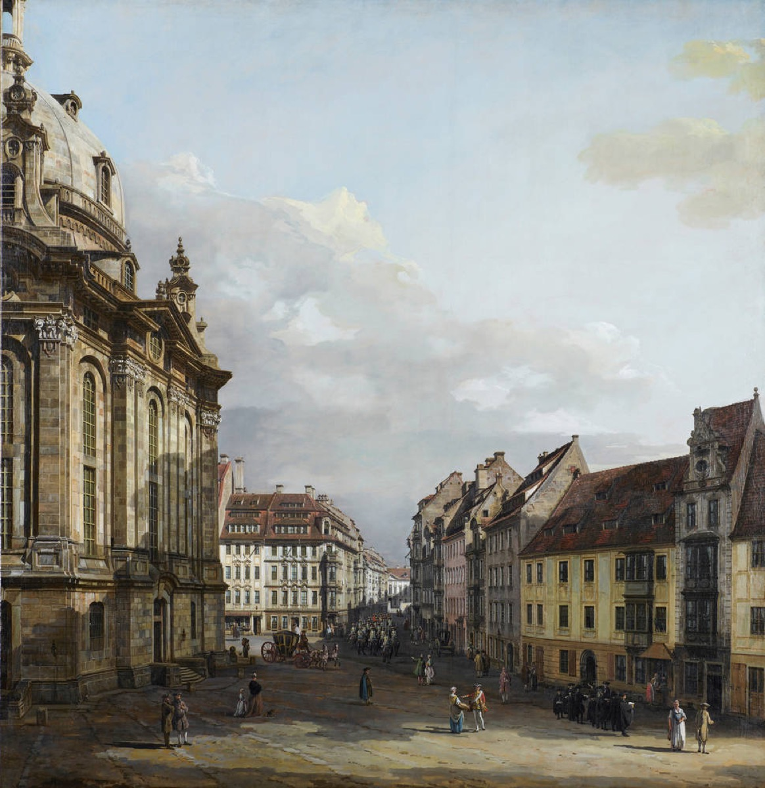

The Dresden gambit: a Missa for a title

In February 1733 the Elector of Saxony, Augustus II — "the Strong," king of Poland besides — died, and the succession imposed months of official mourning across the land. For Leipzig's churches that meant no figural music: the cantata machine, which had run essentially without pause since 1723, fell silent for the only extended stretch of Bach's tenure. A different man might have rested. Bach used the pause like a strategist, and what he did with it turned an enforced silence into the pivot of his middle years.
On 27 July 1733 he presented to the new Elector, Augustus III, in Dresden, a set of beautifully prepared performing parts: a Missa — a Kyrie and Gloria of staggering scale, the music the world now knows as the first half of the B minor Mass. Every detail was Dresden-tailored. The court was Catholic and its Lutheran subjects were not, and a Latin Missa — the Kyrie and Gloria being common to both confessions — was the one genre that could serve both at once: brilliance engineered to be admissible. Attached was a petition whose language repays study. Bach did not ask for money or a post; he begged the royal protection of a court title against the "one insult or another" he endured in Leipzig — naming, in a document addressed to a king, the small local persecutions of councilmen and schoolmasters.
That sentence is the key to the whole maneuver, because the logic was armor, not vanity. A Hof-Compositeur answered, in dignity, to a king; local councils and rectors harass such a man at their peril. The honorary titles Bach already held from Cöthen and Weissenfels were expiring assets of small courts, worth little in a Leipzig dispute; a Saxon royal title was jurisdiction itself. The pursuit took three years — renewed petitions, and probably the advocacy of Count Keyserlingk, the Russian envoy in Dresden, a name that returns at the decade's end with the Goldberg Variations. The decree finally arrived on 19 November 1736: Royal Polish and Electoral Saxon Court Composer. Two weeks later Bach traveled to Dresden and gave a celebrated two-hour recital on the new Silbermann organ of the Frauenkirche — the title sung in, publicly, on the finest instrument in the kingdom, before the audience that mattered.
The family strategy of these years pointed the same direction, and deserves to be read as part of the same campaign. In 1733 Friedemann, the eldest and most gifted son, was installed as organist of Dresden's Sophienkirche; the boys were being launched toward the court careers their father had never had. Bach the institutional combatant and Bach the father were running one coordinated operation: if Leipzig would not value the family's art, the family would acquire standing that Leipzig could not touch.
Did the armor work? The timing answers: within months of the decree, Bach was deep in the prefect war with the rector Ernesti, a dispute that escalated through council and consistory until it reached — precisely — the King-Elector in Dresden, whose new court composer Bach had just become. The title did its local work.
But the deeper interest of this card is what the maneuver accidentally created, and this is worth sitting with. The Missa of 1733 was, on its face, occasional music with a purpose: a portfolio piece, composed to win a bureaucratic protection. Fifteen years later, in the last years of his life, Bach returned to it and built outward — Credo, Sanctus, the rest — until the petition-piece had become the seed crystal of the final summa, the complete Mass in B minor, by wide consent one of the summits of Western art. Bach's shrewdest career maneuver and his greatest work share a birth certificate. The lesson resists both cynical and sentimental readings: the masterpiece was not soiled by its worldly errand, and the errand was not ennobled retroactively — they were simply, from the start, the same act, because for this composer maximum art was the negotiating position. He asked a king for protection, and the exhibit he attached outlived the kingdom.
Continue with the era essay: Leipzig II: coffee-house concertos and paper wars, or watch the armor tested at once: the battle of the prefects.
Bach's petition to Augustus III with the Missa parts, 27 July 1733 (Bach Digital)
Court decree of 19 Nov 1736 (New Bach Reader)
Wolff, The Learned Musician, ch. 10
→ full bibliography & links